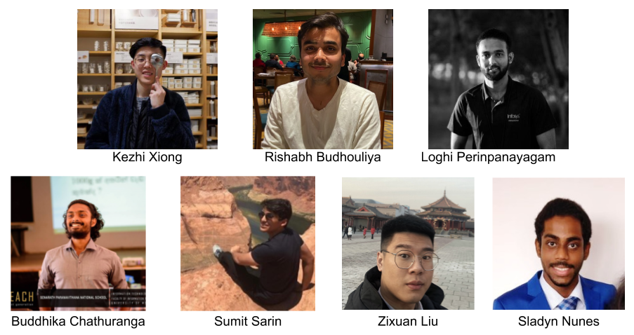
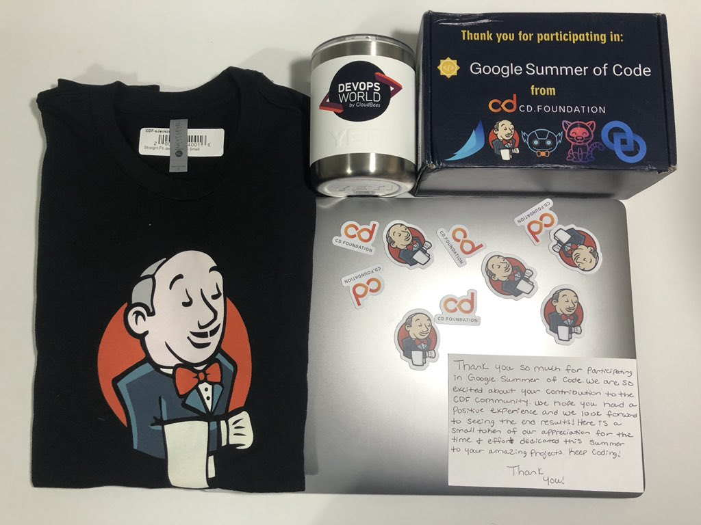

2020 Google 编程之夏活动总结
随着十月份导师峰会与课题回顾的结束，现在我们宣布 Google 编程之夏 2020 活动在 Jenkins 社区圆满结束。我们谨代表 Jenkins 团队，感谢所有今年参与到此次活动的参与者们: 学生、导师、申请者以及各位贡献者。Google 编程之夏活动的顺利举行离不开 Jenkins 社区各位成员的积极参与。
如果一直关注 Jenkins 博客，你已经看到课题团队创建了很多 GSoC 2020 文章。这里，我们着重聚焦一些此次活动的“高光时刻”。

项目
2020 年，我们有 7 名学生参与进了 Jenkins 导师组织中。有 6 个 Jenkins 项目 1 个 Jenkins X 项目。按照往年惯例，在 GSoC 我们一般将注意力集中于对 Jenkins 用户与社区成员比较重要的问题上。这些项目具有备受期待的新特性以及对后期 Jenkins 长期发展具有关键意义的架构变更。
以下为今年我们参与的项目:
详细信息与项目 demo 请点击项目博客链接查阅，这里我们分享一下最终的结果。所有的 GSoC 学生完成了最终评估并通过这在 Jenkins 中尚属首次。项目中的所有成员付出了巨大的努力，最重要的是学生们的付出。对他们致以谢意。

同样感谢项目进行过程中给予帮助的导师们: Zhao Xiaojie, Kristin Whetstone, Parichay Barpanda, Martin d’Anjou, Oleg Nenashev, Andrey Falko, Mike Cirioli, Mark Waite, Francisco Fernandez, Justin Harringa, Omkar Deshpande, Ulli Hafner, Tim Jacomb, Kara de la Marck, James Strachan, Neha Gupta, Oscar Medina, Nikhil Da Rocha, Sahil Kalra, Bruno P. Kinoshita, Ioannis Moutsatsos, Marky Jackson, Shivay Lamba, 以及 Next Turn.
GSoC 2020 官方管理团队: Kara de la Marck, Martin d’Anjou, Marky Jackson, Oleg Nenashev
活动
由于 Google 提供了 GSoC 组织和其他的活动经费，Jenkins 项目通常会向项目成功的学生提供差旅费用这样他们可以参观重要的社区活动，与导师以及社区成员见面，并分享他们的工作。这篇文章为 GSoC 2019 旅行相关记录。不幸的是今年没有成行，GSoC 今年全部改为了线上的虚拟形式举行。
线上会议
八月我们组织了 Jenkins 线上会议，学生们演示了他们的项目（第一部分，第二部分）你可以观看 Jenkins YouTube 频道的播放列表录制的演示视频。
DevOps World
今年，作为 Jenkins 合作伙伴之一的 CloudBees，邀请所有学生参加了于 9 月 23 日 - 25 日举行的 DevOps World 虚拟会议。GSoC 学生们讲解他们参与的项目，参与其他会议讨论，以及参加 Continuous Delivery Foundation 在会上分享了他们参与的项目。你可以通过这里找到录制的音频以及所有的资料。尽管会议是 9 月举办的，但这些音频是 8 月上旬提前录制好的。有关最新版本，请参阅 Jenkins 在线会议记录。
GSoC 导师峰会
这是一次召集了 Google 编程之夏的导师们与官方管理者的例会，他们分享关于 GSoC 的经历、计划的扩展、社区参与、还有工具。通常在 GSoC 结束后组织每个项目 2-3 名代表举办一个为期数天的非会议。每次的参会都是一个很棒的学习经历。今年则是一天的线上活动，所有导师参会。Shivay Lamba 是 2020 GSoC 的导师之一，做了一次关于他参与 Jenkins 和 CNCF 的 GSoC 项目的一次颇具亮点的分享（幻灯片）。
纪念品
所有 Google 编程之夏的学生和导师们都会得到 Google 提供的纪念品。今年 Contrinuos Delivery Foundation (CDF) 为 50 名 GSoC 参与者包括所有的学生，导师以及其他参与并帮助项目取得成功的贡献者们赞助了纪念品。这是 Jenkins 组织第三年赠送了额外的 GSoC 纪念品，过去几年，纪念品后勤工作对管理团队来说一直是项目过程中最具挑战的工作。我们非常感谢 CDF 的帮助。因为出席了 DevOps World，学生们也收到了来自 CloudBees 授予的大会发言人特别版纪念品。

非常感谢 Google，Contrinuos Delivery Foundation (CDF) 以及 CloudBees！
回顾
编码阶段结束后，管理团队与所有 GSoC 2020 的参与者进行接触并收集他们的反馈和建议。同样，我们建议项目团队也可以组织项目自己的回顾会议。这些建议可以在 Jenkins 社区中对 GSoC 的持续提升提供帮助。感谢所有贡献者们分享他们的反馈。
组织范围内的回顾是作为一项调查和一系列回顾会议而组织的。可以通过 Google Doc 查看汇总结果。总体上来看，我们从学生与导师那里收集到了许多积极的反馈。Jenkins 社区里的 GSoC 框架相较于前几年已显著成熟。我们投入了大量精力为各方制定指南与建议的工作非常有帮助，因为所有的期望均已事先得知。跟过去一样，仍有许多需要提升的地方，特别是社区联系阶段与跨项目沟通。我们正在处理这些反馈，明年继续扩充我们的文档以及贡献者入职计划。
一些个人感想
2016 年开始我就已经开始在开源项目中领导和参与 Google 编程之夏的活动了。今年我参观了 FOSDEM 的 GSoC 展台，见到了几位组织者和以前的学生。几天后，我提议参加在布鲁塞尔举行的 Jenkins 贡献者峰会的 GSoC，几位贡献者也支持我这个想法。我们花费了几个小时创建了第一个 Jenkins GSoC 页面并就项目构想集思广益。我们提交了设计的应用程序并且成功通过。非常感谢 Google 团队能够给我们这次机会！
跟这些学生们在一起工作，能够体会到他们探索开源社区的方式以及按照工程师的方式成长真的是很棒的一件事。看到他们一直在项目中并且以插件维护者与 GSoC 导师的身份一直保持着贡献是很棒的一件事。但对我来说，Google 编程之夏不仅关于指导。它对社区联系帮助很大…对于像 Jenkins 这样已经存在的社区来说会有很多子社区开发了一些独立的插件。许多维护者单独维护，在没有反馈、开发者想法、用户交互的情况下维护一个插件是异常孤独的。当插件贡献者成为一名项目导师，他们投入到了一个更广阔的社区并参与其中。许多情况下，他们开始为组织范围内的活动和目标作出贡献，逐渐增长 Jenkins 社区的“骨干”成员。跟其他社区驱动项目一样，我们需要这样的骨干成员去壮大整个社区并为不计其数的 Jenkins 组件提供更多的贡献支持。到目前为止完成的很好并且在 GSoC 扩展计划中表现出色。
我要感谢 Google 开源团队，学生们以及所有 Jenkins 社区成员这一年来为 Google 编程之夏活动作出的贡献。同样感谢 Continuous Delivery Foundation 提供的帮助，以帮助识别贡献者并使组织管理者专注于该项目。最后，我要感谢 Jenkins 管理团队：Martin d’Anjou, Marky Jackson, 和 Kara de la Marck。对每个人来说今年都是疯狂的一年。不论怎样，管理团队都加紧努力，为学生与导师参与到项目当中尽职尽责并倾注了很多时间。组织者的工作很多并不是肉眼可见（应用，项目选择，解决冲突），但是这些工作却是整个项目成功的重要因素。非常感谢管理团队和导师这一年以来的管理工作！
GSoC 2021？
是的，我们计划参加 Google 编程之夏 2021 活动。组织的申请将会在几个月后开始，但是我们已经开始准备下一年度的 GSoC 活动了。我们正在寻找导师，组织管理者以及项目设想。如果你对这些感兴趣请联系我们！
导师信息: 指南与期望
我们邀请潜在的学生们探索这些项目和可用的项目设想。最初的想法在项目中始终是受欢迎的，尽早开始的话对介绍到 Jenkins 社区，收集更多领域的问题以及创建一个好的提案可以创造一个好的机会。“尽早开始”是 GSoC 2020 参与者给未来 GSoC 学生们最多的建议，我们也鼓励你遵循此建议。